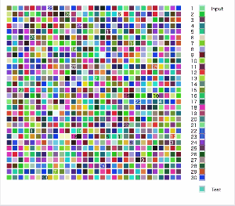

機械学習手法の一つであるSOMを直感的に理解するためのデモプログラム．
Self Organizing Map（自己組織化マップ）はT.Kohonenによって開発された教師なし学習手法で，高次元データを低次元に写像することができる．
SOMeLでは，SOMによって色配列を3次元（RGB）から2次元（位置）に変換している． 似た色（RGBの値が近い色）同士は近くにマッピングされる．
機械学習手法の一つであるSOMを直感的に理解するためのデモプログラム．
Self Organizing Map（自己組織化マップ）はT.Kohonenによって開発された教師なし学習手法で，高次元データを低次元に写像することができる．
SOMeLでは，SOMによって色配列を3次元（RGB）から2次元（位置）に変換している． 似た色（RGBの値が近い色）同士は近くにマッピングされる．
アルゴリズムは以下の通りである．
実行すると以下のようになる．
文章や数式では理解するのが難しい機械学習アルゴリズムを直感的に理解するために作りました．
視覚的に理解しやすくするため"色"を対象データとし，各パラメータの役割を理解しやすくするためユーザが自由に設定できるようにしています．
ライブラリなしでの機械学習アルゴリズムの実装は大変でしたが，書籍などで調べながら実装することで自分自身もSOMに対する理解を深めることができました．